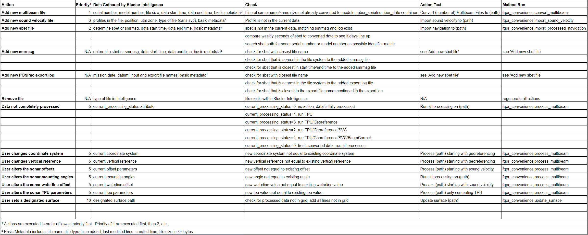

Kluster Intelligence¶
Kluster processing is largely just a one button affair. The user adds data or changes an option, a new action is created (ex: ‘convert 5 multibeam files to …) and the user runs that action. But how are those actions created? And how can it know what to do without me telling it what to do?
Enter the Kluster Intelligence module. This is the behind-the-scenes technology that powers the actions you see in Kluster. I have a basic diagram of the Intelligence module below.

It’s pretty simple really. The user adds data, the Intelligence module gathers info about that data, it builds the next action and shows it to the viewer for approval (i.e. you hit the start button). If the user changes a setting, the module will take that change and redo the actions with the change in mind. Theoretically, all actions the user could take are covered by the Intelligence module, to the point that you no longer really have to know how to process multibeam data, which was the goal.
So what can the Intelligence module handle? What automated tasks will it make? I have a chart below of all the possible actions.
{kind=link}
You’ll notice a few interesting things:
Kluster Intelligence knows which steps need to be repeated whenever a setting is changed. This is due to the linear nature of the processing workflow, which must be performed in this order:
Compute vessel orientation using attitude and mounting angles
Correct raw beam angles using new orientation
Sound Velocity Correct using the corrected angles and travel time to get alongtrack, acrosstrack, depth offsets
Georeference to turn SVC offsets into northing/easting according to coordinate system and to correct depth offset according to vertical reference
Calculate the total vertical and horizontal uncertainty
So if I change the coordinate system, I need to redo step 4 as the coordinate system changes and step 5 as uncertainty calculation relies on the output of georeferencing. If I change the waterline, I need to redo steps 3, 4 and 5. And so on.
Kluster Intelligence keeps a lot of data related to each file, more than you might think, including modified times, file size, etc. Early on, these fields were used extensively, but in later iterations, they are largely ignored.
Actions have a priority, which determines the order in which they are run. This is to ensure that you import navigation before you georeference, for example.
Automatically building navigation actions using the POSPac sbet/smrmsg/export log is hard. Basically impossible to do with 100% certainty. This is due to the lack of metadata within the sbet. What I have done is build a number of checks that if they all line up, should match the converted multibeam data to the correct sbet/smrmsg data. You are always free to import sbet using the separate dialog instead of the Intelligence module.